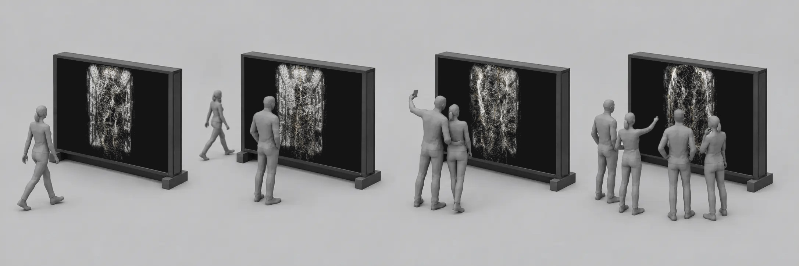
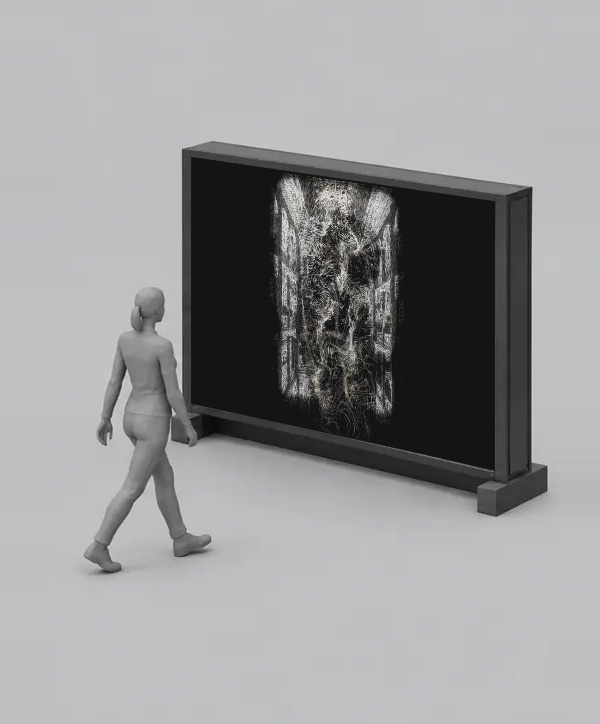
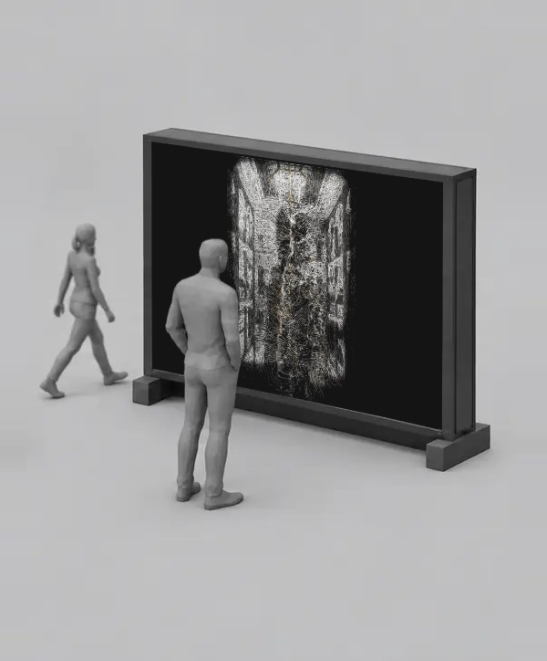
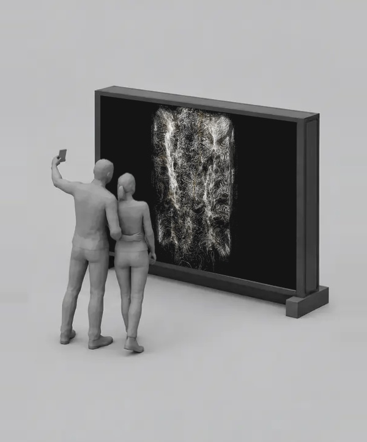
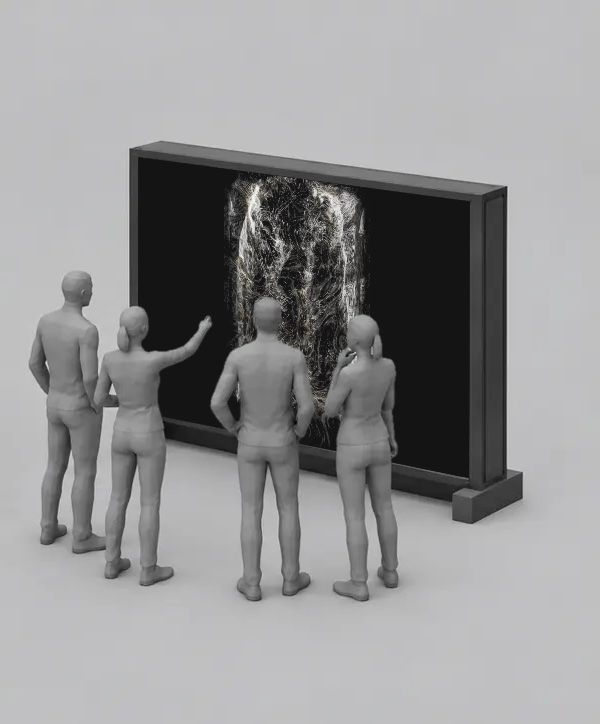

Et værk til Illum
Jeg har udviklet en prototype på et interaktivt værk til jeres atrium. Atriet er tegnet op i tusindvis af tynde tråde af lys. Når nogen bevæger sig foran værket, fletter trådene sig ud og bliver til fint støv. Når der igen er stille, samler billedet sig.
Test i realtid
Øverst ses kameraets billede af en person foran værket, nederst værket i samme øjeblik. Bygningen opløses der, hvor personen bevæger sig, og samler sig igen, når personen går.
Værket i brug
Visualisering af værket med publikum. Billedet ændrer sig efter, hvor mange der står foran det, og hvordan de bevæger sig.


Går forbi
Står stille
Tager en selfie
Flere sammen


Værket er bygget op omkring Illums eget atrium og jeres farver, sort, hvid og guld.
Der er intet at betjene, og intet skal forklares. Man opdager værket ved at gå forbi, og det lægger op til at blive stående, prøve igen og filme.
Opstillingen kræver kun en skærm, et kamera og en computer. Formatet tilpasses den skærm eller væg, der passer bedst til rummet, og værket kan vises i en periode, følge en kampagne eller blive en fast del af atriet.